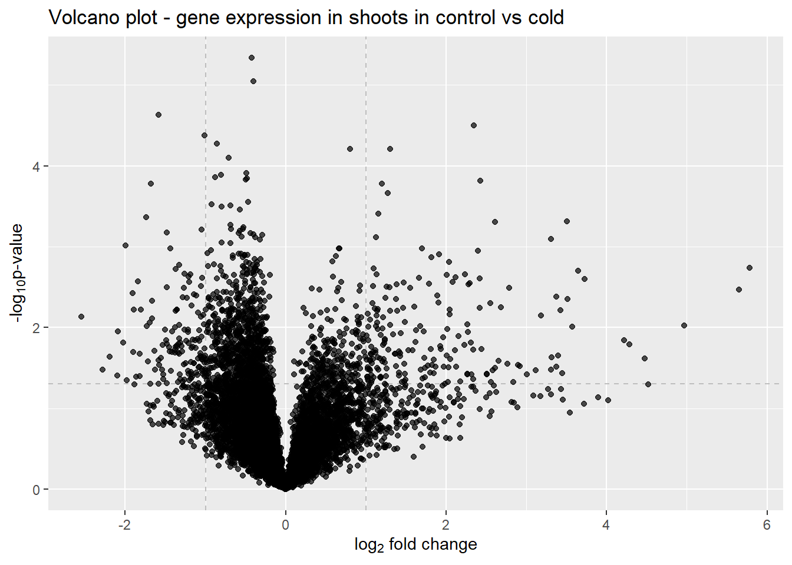

Rows: 633300 Columns: 9
── Column specification ────────────────────────────────────────────────────────
Delimiter: "\t"
chr (7): GSM, title, condition, tissue, timepoint, replicate, gene
dbl (2): expression, average
ℹ Use `spec()` to retrieve the full column specification for this data.
ℹ Specify the column types or set `show_col_types = FALSE` to quiet this message.
# as the averages are calculated for the replicates and the average values are shown for each replicate, here replicate 2 is removed as it has most of the same information and rpelicate 1expr_df <- expr_with_meta |>filter(replicate =="Rep1")
Selecting for shoots and roots
# filtering the data by tissue to prepare for differential expression shoots <- expr_df |>filter(tissue =="Shoots") roots <- expr_df |>filter(tissue =="Roots")
# trying out the data on in the plotggplot(data = shoots_de, aes(x = log2FC, y = neglog10p)) +geom_vline(xintercept =c(-1, 1), col ="gray", linetype ="dashed") +geom_hline(yintercept =-log10(0.05), col ="gray", linetype ="dashed") +geom_point(alpha =0.7) +labs( title ="Volcano plot - gene expression in shoots in control vs cold", x =expression("log"[2]*" fold change"), y =expression("-log"[10]*"p-value") )

There is too many data points, so the plot is not optimal. To adjust that, the expression will be marked as up/down-regulated or not-significant.
Updated volcano plot for gene expression in shoots
# calculating gene expression means to get the general regulation of genesgene_means <- expr_df |>group_by(gene) |>summarise(mean_expr =mean(expression)) # adding the means to the data and capping the values that are above 10 to make have less outliersres_shoots_clean <- res_shoots |>left_join(gene_means, by="gene") |>mutate(neglog10p_capped =pmin(neglog10p, 10) ) |>filter(mean_expr >1) # adding labels to top 5 upregulated genestop_up <- res_shoots_clean |>arrange(desc(log2FC)) |>slice_head(n =5)# adding labels to top 5 downregulated genestop_down <- res_shoots_clean |>arrange(log2FC) |>slice_head(n =5)# pooling the labels to make it easier to add to the plottop_labels <-bind_rows(top_up, top_down)shoots_plot <-ggplot(res_shoots_clean, aes(log2FC, neglog10p_capped)) +geom_point(aes(color = sig,alpha = sig,size = sig)) +geom_text_repel(data = top_labels, # using ggrepel to avoiding label collisionaes(label = gene),box.padding =0.5,point.padding =0.3,segment.color ="grey40",segment.size =0.5,arrow =arrow(length =unit(0.01, "npc")), min.segment.length =0.1, max.overlaps =20,size =3,force =2 ) +scale_alpha_manual(values =c("Not significant"=0.15,"Upregulated"=0.8,"Downregulated"=0.8)) +scale_size_manual(values =c("Not significant"=0.5,"Upregulated"=1.5,"Downregulated"=1.5)) +scale_color_manual(values =c("Upregulated"="#A30000", "Downregulated"="#0000A3","Not significant"="gray")) +geom_vline(xintercept =c(-1, 1), col ="gray", linetype ="dashed") +scale_x_continuous(breaks =seq(-3, 5, 1)) +theme_light() +theme(legend.position ="bottom") +guides(alpha ="none", size ="none") +labs(title ="Volcano plot - gene expression in shoots in control vs cold",color ="Expression rate", x =expression("log"[2]*" fold change"), y =expression("-log"[10]*"p-value"))shoots_plot
# calculating gene expression means to get the general regulation of genesgene_means <- expr_df |>group_by(gene) |>summarise(mean_expr =mean(expression)) # adding the means to the data and capping the values that are above 10 to make have less outliersres_roots_clean <- res_roots |>left_join(gene_means, by="gene") |>mutate(neglog10p_capped =pmin(neglog10p, 10) ) |>filter(mean_expr >1) # adding labels to top 5 upregulated genestop_up <- res_roots_clean |>arrange(desc(log2FC)) |>slice_head(n =5)# adding labels to top 5 downregulated genestop_down <- res_roots_clean |>arrange(log2FC) |>slice_head(n =5)# pooling the labels to make it easier to add to the plottop_labels <-bind_rows(top_up, top_down)roots_plot <-ggplot(res_roots_clean, aes(log2FC, neglog10p_capped)) +geom_point(aes(color = sig,alpha = sig,size = sig)) +geom_text_repel(data = top_labels, # using ggrepel to avoiding label collisionaes(label = gene),box.padding =0.5,point.padding =0.3,segment.color ="grey40",segment.size =0.5,arrow =arrow(length =unit(0.01, "npc")),min.segment.length =0.1, max.overlaps =20,size =3,force =2 ) +scale_alpha_manual(values =c("Not significant"=0.15,"Upregulated"=0.8,"Downregulated"=0.8)) +scale_size_manual(values =c("Not significant"=0.5,"Upregulated"=1.5,"Downregulated"=1.5)) +scale_color_manual(values =c("Upregulated"="#A30000", "Downregulated"="#0000A3","Not significant"="gray")) +geom_vline(xintercept =c(-1, 1), col ="gray", linetype ="dashed") +scale_x_continuous(breaks =seq(-3, 5, 1)) +theme_light() +theme(legend.position ="bottom") +guides(alpha ="none", size ="none") +labs(title ="Volcano plot - gene expression in roots in control vs cold",color ="Expression rate", x =expression("log"[2]*" fold change"), y =expression("-log"[10]*"p-value"))roots_plot